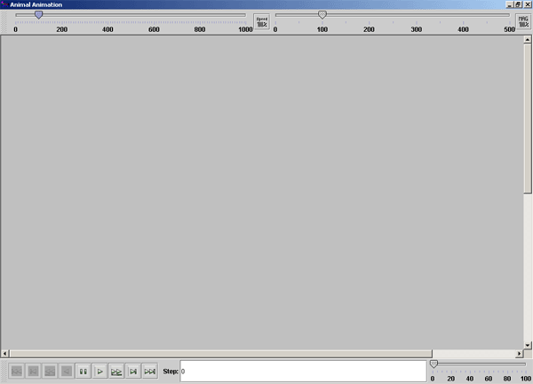
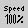
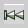
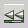
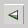
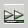
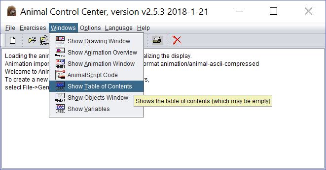

Set
scale
Set
scaleThe free animation software ANIMAL can visualize algorithms. ANIMAL is a Java application that allows arbitrarily fine modelling of the single steps of algorithms. The step sequences can either be archived with static data in an AML file, or defined via AnimalScript with dynamic data.
ANIMAL can then be used to either manually run through the step sequences or automatically play the whole step sequence at once. Within ANIMAL you have options regarding speed and zoom.
ANIMAL is rolled out together with CrypTool (see menu Indiv. Procedures \ Visualization of Algorithms). Since ANIMAL is a Java application, you must have installed a Java runtime environment (at least version 1.7, downloadable via http://java.sun.com). From Animal 2.5.3, ANIMAL also runs under Java 9.
You can download the current version of ANIMAL in German and English from http://www.algoanim.net/. There you can also find a big collection of free animations of algorithms from totally different areas.
Two windows are opened when ANIMAL is loading:
If the display window is not visible, you can activate it via the menu entry "Edit \ Display Animation Window" in the control window.
The layout of the display window changed during its lifecycle. Normally it has the following icons to handle the ANIMAL display window:

 Set display speed
Set
scale
 Start animation in first step
Go back to previous animation step
 Display the animation in reserve slide-show mode
 Play the animation in reserve mode
Pause the current animation
Play the animation
 Display the animation in slide-show mode
 Go forward to next animation step
Go forward to next animation step
 Go to end of animation
Go to end of animation
Click both the Close-Button of the Animation-Window and the Program-Window to close the animation properly
Remark 1:
From CT1 the animal.jar file isn't called directly but via the batch file animal.bat.
Remark 2:
The DES animation and the Nihilist animation contain "titles" (label)
which structure and cluster the steps of the animation.
So, together with the display window also a Table-of-Contents window is opened.
If you click therein on a title (selecting one line), the display window
moves directly to the according step.
Remark 3:
You can open the Table-of-Contents window also from the
menu "Windows" in the Animal Control Center.
